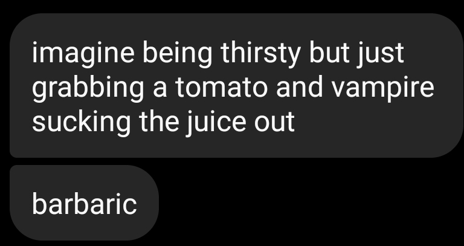

wHeN i StReTcH mY aRmS oUt I cAn tOuCh tHe iNsIdE rOoF 
Other stuff
* clonk here for the kwoahtayshuns corner
* clonk here to go to the aesthetic corner
1. how many spotted yellow birds are there in the world? i think we could use one more
2. does one pair of legs become wings? do wings get added on in addition to legs? do all the legs become wings?
we'd be missing out if we didn't know
3. that would be one chunky bird like we're talking a bird the size of a bus, or it could be a really cute tiny
flying giraffe
4. evolutionarily superior because it doesn't need to reach for leaves anymore it can just fly and get unlimited food
5. i would LOVE to hear the noise that comes out of its mouth (beak?)
6. imagine leaving lemonade outside in the summer and a stampede of monstrous birds with dangly legs and necks come
crashing through the trees and they start grunt-squawking at each other, fighting over the precious sugar water
7. do they have fur or feathers? i bet they'd be pretty soft and perfect for pillows or something after the birds die or
something
8. they could theoretically be great pets, like the dog version of a budgie
9. bigger wing surface area = lower pitch hum on hummingbirds, so i want to hear the insane bass coming off this animal